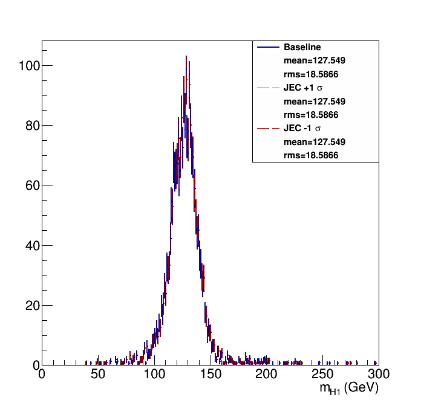
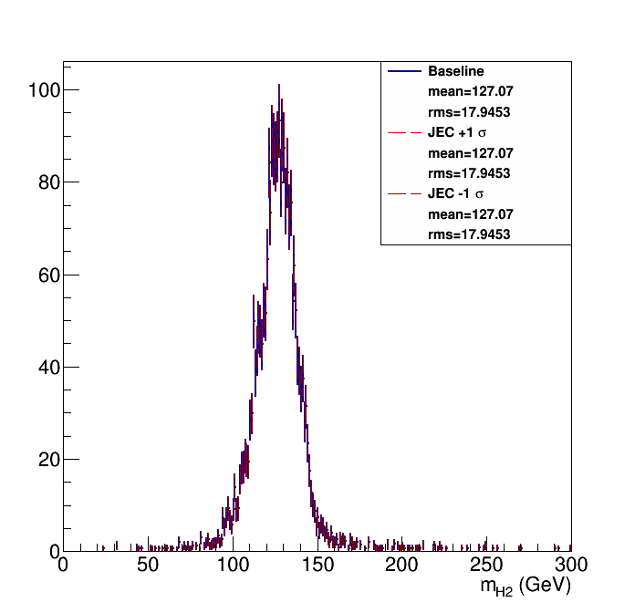
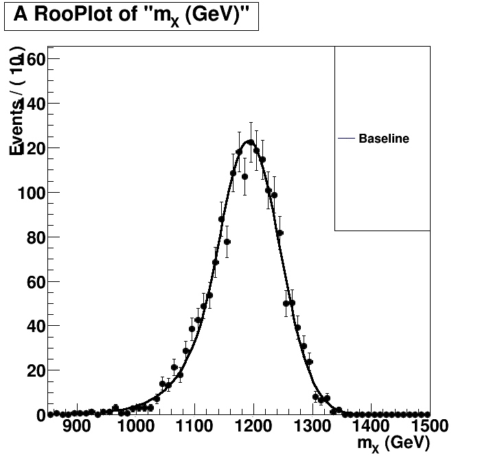
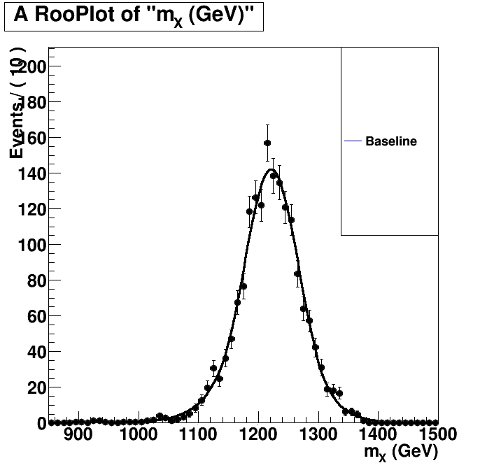

| Higgs 1 mass  | Higgs 2 mass  |
Without Kin-Fit. Fitted to an Exp-Gauss-Exp function.=== Baseline plot === |
With Kin-Fit. Fitted to an Exp-Gauss-Exp function.=== Baseline plot === norm = 768.328 sg_p0 = 1221.58 1.42414 sg_p1 = 46.4455 1.47485 sg_p2 = 1.5872 0.145053 sg_p3 = 1.31061 0.0993931 btag lnN 1.00793 - |